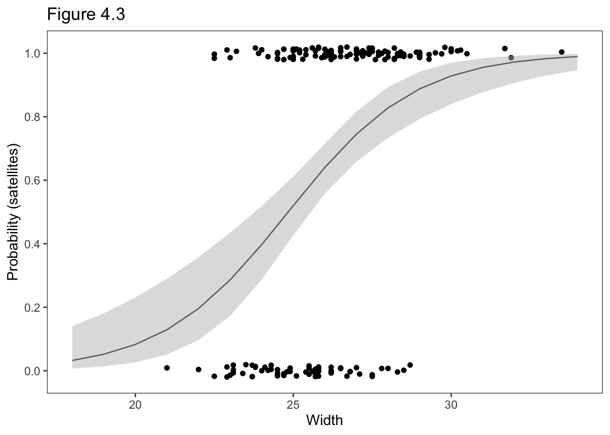

4 Logistic Regression
4.1 The Logistic Regression Model
4.1.1 The Logistic Regression Model
\[\begin{equation} \mathrm{logit}[\pi(x)] = \mathrm{log}\left[\frac{\pi(x)}{1=\pi(x)}\right]= \alpha + \beta x. \tag{6} \end{equation}\]
\[\begin{equation} \pi(x) = \frac{e^{\alpha + \beta x}}{1+e^{\alpha + \beta x}}. \tag{7} \end{equation}\]
4.1.2 Odds Ratio and Linear Approximaiton Interpreetations {#4.1.2}
\[\frac{\pi(x)}{1-\pi(x)}=\mathrm{exp}(\alpha + \beta x) = e^\alpha(e^\beta)^x.\]
Crabs <- read.table("http://users.stat.ufl.edu/~aa/cat/data/Crabs.dat",
header = TRUE
)
library(RColorBrewer)
colors <- brewer.pal(n = 4, name = "Dark2")
fit <- glm(y ~ width, family = binomial, data = Crabs)
summary(fit)
Call:
glm(formula = y ~ width, family = binomial, data = Crabs)
Deviance Residuals:
Min 1Q Median 3Q Max
-2.0281 -1.0458 0.5480 0.9066 1.6942
Coefficients:
Estimate Std. Error z value Pr(>|z|)
(Intercept) -12.3508 2.6287 -4.698 2.62e-06 ***
width 0.4972 0.1017 4.887 1.02e-06 ***
---
Signif. codes: 0 '***' 0.001 '**' 0.01 '*' 0.05 '.' 0.1 ' ' 1
(Dispersion parameter for binomial family taken to be 1)
Null deviance: 225.76 on 172 degrees of freedom
Residual deviance: 194.45 on 171 degrees of freedom
AIC: 198.45
Number of Fisher Scoring iterations: 4at28 <- predict(fit, data.frame(width = 28), type = "resp")
at29 <- predict(fit, data.frame(width = 29), type = "resp")
x <- seq(20, 34, by = .01)
df <- tibble(x = x) %>%
mutate(y = predict(fit, data.frame(width = x), type = "resp"))
spl <- smooth.spline(df$x, df$y, spar = 0.3)
newx <- seq(min(df$x), max(df$x), 0.1)
pred <- predict(spl, x = newx, deriv = 0)
# solve for tangent at a given x
newx <- 28
pred0 <- predict(spl, x = newx, deriv = 0)
pred1 <- predict(spl, x = newx, deriv = 1)
yint <- pred0$y - (pred1$y * newx)
xint <- -yint / pred1$y
tang <- tibble(x = df$x) %>%
mutate(y = yint + pred1$y * x) %>%
filter(x > 25.5 & x < 30.5)
library(ggthemes)
aLabel <- as.vector(expression(paste(beta, pi, "(1-", pi, ")")))
ggplot() +
geom_line(data = df, aes(x = x, y = y)) +
geom_line(data = tang, aes(x = x, y = y)) +
annotate(
geom = "segment", x = 28, y = at28, xend = 28, yend = at29,
color = colors[1]
) +
annotate(
geom = "segment", x = 28, y = at29, xend = 29, yend = at29,
color = colors[1]
) +
annotate(
geom = "text", x = 26.35, y = at28 + .02,
label = 'paste(beta, pi, "(1-" , pi, ")")', parse = TRUE,
hjust = "left",
color = colors[1]
) +
annotate(
geom = "text", x = 28.3, y = at29 + .03,
label = "1",
hjust = "left",
color = colors[1]
) +
theme_few() +
theme(axis.title.y = element_text(angle = 0, vjust = .5)) +
scale_x_continuous(breaks = seq(20, 34, by = 2)) +
scale_y_continuous(breaks = seq(0, 1, by = .2)) +
ggtitle("Figure 4.1") +
xlab("Width") +
ylab("Probability")4.1.3 Example: Whethr a Female Horsehoe Crab Has Satelites
Crabs <- read.table("http://users.stat.ufl.edu/~aa/cat/data/Crabs.dat",
header = TRUE
)
Crabs %>%
filter(row_number() %in% c(1, 2, n())) crab sat y weight width color spine
1 1 8 1 3.05 28.3 2 3
2 2 0 0 1.55 22.5 3 3
3 173 0 0 2.00 24.5 2 2library(RColorBrewer)
colors <- brewer.pal(n = 4, name = "Dark2")
library(gam)
gam.fit <- gam(y ~ s(width), family = binomial, data = Crabs)
fit <- glm(y ~ width, family = binomial, data = Crabs)
plot(jitter(y, 0.08) ~ width, data = Crabs, xlab = "Width", ylab = "Satellites")
curve(predict(gam.fit, data.frame(width = x), type = "resp"),
col = colors[1], add = TRUE
)
curve(predict(fit, data.frame(width = x), type = "resp"),
col = colors[2], add = TRUE
)
Call:
glm(formula = y ~ width, family = binomial, data = Crabs)
Deviance Residuals:
Min 1Q Median 3Q Max
-2.0281 -1.0458 0.5480 0.9066 1.6942
Coefficients:
Estimate Std. Error z value Pr(>|z|)
(Intercept) -12.3508 2.6287 -4.698 2.62e-06 ***
width 0.4972 0.1017 4.887 1.02e-06 ***
---
Signif. codes: 0 '***' 0.001 '**' 0.01 '*' 0.05 '.' 0.1 ' ' 1
(Dispersion parameter for binomial family taken to be 1)
Null deviance: 225.76 on 172 degrees of freedom
Residual deviance: 194.45 on 171 degrees of freedom
AIC: 198.45
Number of Fisher Scoring iterations: 4# estimated probability of satellite at width = 21.0
predict(fit, data.frame(width = 21.0), type = "resp") 1
0.129096 1
0.6738768 \[\mathrm{logit}[\hat\pi(x)] = -12.351 + 0.497 x.\]
\[\hat\pi(x) =\frac{\mathrm{exp}(-12.351 + 0.497 x)}{1+\mathrm{exp}(-12.351 + 0.497 x)}.\]
\[\frac{\mathrm{exp}[-12.351 + 0.497 (21.0)]}{1+\mathrm{exp}[-12.351 + 0.497 (21.0)]} = 0.129.\]
4.1.4 Logistic Regression with Retrospective Studies
4.1.5 Normally Distributed X Implies Logistic Regression for Y
4.2 Statistical Inference for Logistic Regression
4.2.1 Confidence Intervals for Effects
Crabs <- read.table("http://users.stat.ufl.edu/~aa/cat/data/Crabs.dat",
header = TRUE
)
fit <- glm(y ~ width, family = binomial, data = Crabs)
summary(fit) # z value & p-value Wald test
Call:
glm(formula = y ~ width, family = binomial, data = Crabs)
Deviance Residuals:
Min 1Q Median 3Q Max
-2.0281 -1.0458 0.5480 0.9066 1.6942
Coefficients:
Estimate Std. Error z value Pr(>|z|)
(Intercept) -12.3508 2.6287 -4.698 2.62e-06 ***
width 0.4972 0.1017 4.887 1.02e-06 ***
---
Signif. codes: 0 '***' 0.001 '**' 0.01 '*' 0.05 '.' 0.1 ' ' 1
(Dispersion parameter for binomial family taken to be 1)
Null deviance: 225.76 on 172 degrees of freedom
Residual deviance: 194.45 on 171 degrees of freedom
AIC: 198.45
Number of Fisher Scoring iterations: 4 2.5 % 97.5 %
(Intercept) -17.8100090 -7.4572470
width 0.3083806 0.7090167Analysis of Deviance Table (Type II tests)
Response: y
LR Chisq Df Pr(>Chisq)
width 31.306 1 2.204e-08 ***
---
Signif. codes: 0 '***' 0.001 '**' 0.01 '*' 0.05 '.' 0.1 ' ' 14.2.2 Significance Testing
4.2.3 Fitted Values and Confidence Intervals for Probabilities
\[\hat P(Y=1)=\mathrm{exp}(\hat\alpha + \hat\beta x)/[1 + (\hat\alpha + \hat\beta x)],\]
Crabs <- read.table("http://users.stat.ufl.edu/~aa/cat/data/Crabs.dat",
header = TRUE, stringsAsFactors = TRUE
)
fit <- glm(y ~ width, family = binomial, data = Crabs)
pred.prob <- fitted(fit) # ML fitted value estimate of P(Y = 1)
lp <- predict(fit, se.fit = TRUE) # linear predictor
LB <- lp$fit - 1.96 * lp$se.fit # confidence bounds for linear predictor
LB <- lp$fit + qnorm(0.025) * lp$se.fit # better confidence bound
UB <- lp$fit + qnorm(0.975) * lp$se.fit
LB.p <- exp(LB) / (1 + exp(LB)) # confidence bounds for P(Y = 1)
UB.p <- exp(UB) / (1 + exp(UB))
library(dplyr) # bind_cols, filter, row_number
predictions <-
bind_cols(
Width = Crabs$width,
`Predicted probaility` = pred.prob,
`Lower CB` = LB.p,
`Upper CB` = UB.p
)
predictions %>%
filter(row_number() %in% c(1, 7, n()))# A tibble: 3 x 4
Width `Predicted probaility` `Lower CB` `Upper CB`
<dbl> <dbl> <dbl> <dbl>
1 28.3 0.848 0.753 0.911
2 26.5 0.695 0.612 0.768
3 24.5 0.458 0.356 0.564fit <- glm(y ~ width, family = binomial, data = Crabs)
library(tidyverse)
data.plot <- tibble(width = 18:34)
lp <- predict(fit, newdata = data.plot, se.fit = TRUE)
library(ggthemes)
data.plot <- data.plot %>%
mutate(
pred.prob = exp(lp$fit) / (1 + exp(lp$fit)),
LB = lp$fit + qnorm(0.025) * lp$se.fit,
UB = lp$fit + qnorm(0.975) * lp$se.fit,
LB.p = exp(LB) / (1 + exp(LB)),
UB.p = exp(UB) / (1 + exp(UB))
)
data.plot %>%
ggplot(aes(x = width)) +
geom_point(data = Crabs, aes(x = width, y = jitter(y, .1))) +
geom_line(aes(y = pred.prob)) +
geom_ribbon(aes(ymin = LB.p, ymax = UB.p), fill = "gray", alpha = 0.5) +
theme_few() +
ylab("Probability (satellites)") +
scale_y_continuous(breaks = seq(0, 1, by = .2)) +
xlab("Width") +
ggtitle("Figure 4.3")
4.2.4 Why Use a Model to Estimate Probabilities?
4.3 Logistic Regression with Categorical Predictors
4.3.1 Indicator Variables Represent Categories of Predictors
\[\mathrm{logit}[P(Y = 1)] = \alpha + \beta_1 x + \beta_2 z\]
| x | z | Logit |
|---|---|---|
| 0 | 0 | \(\alpha\) |
| 1 | 0 | \(\alpha + \beta_1\) |
| 0 | 0 | \(\alpha + \beta_2\) |
| 0 | 0 | \(\alpha + \beta_1 + \beta_2\) |
\[ = [\alpha + \beta_1 (1) + \beta_2 z] - [\alpha + \beta_1 (0) + \beta_2 z] = \beta_a.\]
4.3.2 Example: Survey about Marijuana Use
library(tidyverse)
Marijuana <- read.table("http://users.stat.ufl.edu/~aa/cat/data/Marijuana.dat",
header = TRUE, stringsAsFactors = TRUE
)
Marijuana race gender yes no
1 white female 420 620
2 white male 483 579
3 other female 25 55
4 other male 32 62fit <- glm(yes / (yes + no) ~ gender + race,
weights = yes + no, family = binomial,
data = Marijuana
)
theFit <- summary(fit)
theFit
Call:
glm(formula = yes/(yes + no) ~ gender + race, family = binomial,
data = Marijuana, weights = yes + no)
Deviance Residuals:
1 2 3 4
-0.04513 0.04402 0.17321 -0.15493
Coefficients:
Estimate Std. Error z value Pr(>|z|)
(Intercept) -0.83035 0.16854 -4.927 8.37e-07 ***
gendermale 0.20261 0.08519 2.378 0.01739 *
racewhite 0.44374 0.16766 2.647 0.00813 **
---
Signif. codes: 0 '***' 0.001 '**' 0.01 '*' 0.05 '.' 0.1 ' ' 1
(Dispersion parameter for binomial family taken to be 1)
Null deviance: 12.752784 on 3 degrees of freedom
Residual deviance: 0.057982 on 1 degrees of freedom
AIC: 30.414
Number of Fisher Scoring iterations: 3# pull the 2nd and 3rd element from the "Estimate" column, exponentiate & round
round(exp(theFit$coefficients[2:3, "Estimate"]), 2)gendermale racewhite
1.22 1.56 # easier to follow syntax
theCoef <- as.data.frame(coef(theFit))
theCoef %>%
rownames_to_column(var = "Effect") %>%
select("Effect", "Estimate") %>%
filter(Effect != "(Intercept)") %>%
mutate(`Odds Ratio` = exp(Estimate)) %>%
mutate_if(is.numeric, round, digits = 2) Effect Estimate Odds Ratio
1 gendermale 0.20 1.22
2 racewhite 0.44 1.56Analysis of Deviance Table (Type II tests)
Response: yes/(yes + no)
LR Chisq Df Pr(>Chisq)
gender 5.6662 1 0.017295 *
race 7.2770 1 0.006984 **
---
Signif. codes: 0 '***' 0.001 '**' 0.01 '*' 0.05 '.' 0.1 ' ' 14.3.3 ANOVA-Type Model Representation of Factors
\[\mathrm{logit}[P(Y=1)] = \alpha + \beta_i^x + \beta_k^z\]
4.3.4 Tests of Conditoinal Independence and of Homogeneity for Three-Way Contingency Tables
\[\mathrm{logit}[P(Y = 1)] = \alpha + \beta x + \beta_k^z,\]
4.4 Multiple Logistic Regression
\[\mathrm{logit}[P(Y=1)] = \alpha + \beta_1 x_1 + \beta_2 x_2 + \cdots + \beta_p x_p.\]
4.4.1 Example: Horseshoe Crabs with Color and Width Predictors
\[\begin{equation} \mathrm{logit}[P(Y=1)] = \alpha + \beta_1 x + \beta_2 c_2 + \beta_3 c_3 + \beta_4 c_4. \tag{8} \end{equation}\]
Crabs <- read.table("http://users.stat.ufl.edu/~aa/cat/data/Crabs.dat",
header = TRUE, stringsAsFactors = TRUE
)
fit <- glm(y ~ width + factor(color), family = binomial, data = Crabs)
summary(fit)
Call:
glm(formula = y ~ width + factor(color), family = binomial, data = Crabs)
Deviance Residuals:
Min 1Q Median 3Q Max
-2.1124 -0.9848 0.5243 0.8513 2.1413
Coefficients:
Estimate Std. Error z value Pr(>|z|)
(Intercept) -11.38519 2.87346 -3.962 7.43e-05 ***
width 0.46796 0.10554 4.434 9.26e-06 ***
factor(color)2 0.07242 0.73989 0.098 0.922
factor(color)3 -0.22380 0.77708 -0.288 0.773
factor(color)4 -1.32992 0.85252 -1.560 0.119
---
Signif. codes: 0 '***' 0.001 '**' 0.01 '*' 0.05 '.' 0.1 ' ' 1
(Dispersion parameter for binomial family taken to be 1)
Null deviance: 225.76 on 172 degrees of freedom
Residual deviance: 187.46 on 168 degrees of freedom
AIC: 197.46
Number of Fisher Scoring iterations: 4\[\mathrm{exp}[12.715 + 0.468(26.3)]/\{1 + \mathrm{exp}[12.715 + 0.468(26.3)]\}=0.399.\]
\[\mathrm{exp}[11.385 + 0.468(26.3)]/\{1 + \mathrm{exp}[11.385 + 0.468(26.3)]\} = 0.715.\]
4.4.2 Model Comparison to Check Whether a Term is Needed
Call:
glm(formula = y ~ width, family = binomial, data = Crabs)
Deviance Residuals:
Min 1Q Median 3Q Max
-2.0281 -1.0458 0.5480 0.9066 1.6942
Coefficients:
Estimate Std. Error z value Pr(>|z|)
(Intercept) -12.3508 2.6287 -4.698 2.62e-06 ***
width 0.4972 0.1017 4.887 1.02e-06 ***
---
Signif. codes: 0 '***' 0.001 '**' 0.01 '*' 0.05 '.' 0.1 ' ' 1
(Dispersion parameter for binomial family taken to be 1)
Null deviance: 225.76 on 172 degrees of freedom
Residual deviance: 194.45 on 171 degrees of freedom
AIC: 198.45
Number of Fisher Scoring iterations: 4# compare deviance = 194.45 vs 187.46 with color also in model
library(car)
Anova(glm(y ~ width + factor(color), family = binomial, data = Crabs))Analysis of Deviance Table (Type II tests)
Response: y
LR Chisq Df Pr(>Chisq)
width 24.6038 1 7.041e-07 ***
factor(color) 6.9956 3 0.07204 .
---
Signif. codes: 0 '***' 0.001 '**' 0.01 '*' 0.05 '.' 0.1 ' ' 14.4.3 Example: Treating Color as Quantitative or Binary
\[\begin{equation} \mathrm{logit}[P(Y=1)] = \alpha + \beta_1 x + \beta_2 c. \tag{9} \end{equation}\]
Call:
glm(formula = y ~ width + color, family = binomial, data = Crabs)
Deviance Residuals:
Min 1Q Median 3Q Max
-2.1692 -0.9889 0.5429 0.8700 1.9742
Coefficients:
Estimate Std. Error z value Pr(>|z|)
(Intercept) -10.0708 2.8068 -3.588 0.000333 ***
width 0.4583 0.1040 4.406 1.05e-05 ***
color -0.5090 0.2237 -2.276 0.022860 *
---
Signif. codes: 0 '***' 0.001 '**' 0.01 '*' 0.05 '.' 0.1 ' ' 1
(Dispersion parameter for binomial family taken to be 1)
Null deviance: 225.76 on 172 degrees of freedom
Residual deviance: 189.12 on 170 degrees of freedom
AIC: 195.12
Number of Fisher Scoring iterations: 4Analysis of Deviance Table
Model 1: y ~ width + color
Model 2: y ~ width + factor(color)
Resid. Df Resid. Dev Df Deviance Pr(>Chi)
1 170 189.12
2 168 187.46 2 1.6641 0.4351Crabs$c4 <- ifelse(Crabs$color == 4, 1, 0)
# Crabs$c4 <- I(Crabs$color == 4)
fit3 <- glm(y ~ width + c4, family = binomial, data = Crabs)
summary(fit3)
Call:
glm(formula = y ~ width + c4, family = binomial, data = Crabs)
Deviance Residuals:
Min 1Q Median 3Q Max
-2.0821 -0.9932 0.5274 0.8606 2.1553
Coefficients:
Estimate Std. Error z value Pr(>|z|)
(Intercept) -11.6790 2.6925 -4.338 1.44e-05 ***
width 0.4782 0.1041 4.592 4.39e-06 ***
c4 -1.3005 0.5259 -2.473 0.0134 *
---
Signif. codes: 0 '***' 0.001 '**' 0.01 '*' 0.05 '.' 0.1 ' ' 1
(Dispersion parameter for binomial family taken to be 1)
Null deviance: 225.76 on 172 degrees of freedom
Residual deviance: 187.96 on 170 degrees of freedom
AIC: 193.96
Number of Fisher Scoring iterations: 4Analysis of Deviance Table
Model 1: y ~ width + c4
Model 2: y ~ width + factor(color)
Resid. Df Resid. Dev Df Deviance Pr(>Chi)
1 170 187.96
2 168 187.46 2 0.50085 0.77854.4.4 Allowing Interaction between Explanatory Variables
Call: glm(formula = y ~ width + c4 + width:c4, family = binomial, data = Crabs)
Coefficients:
(Intercept) width c4 width:c4
-12.8117 0.5222 6.9578 -0.3217
Degrees of Freedom: 172 Total (i.e. Null); 169 Residual
Null Deviance: 225.8
Residual Deviance: 186.8 AIC: 194.8
Call:
glm(formula = y ~ width + c4 + width:c4, family = binomial, data = Crabs)
Deviance Residuals:
Min 1Q Median 3Q Max
-2.1366 -0.9344 0.4996 0.8554 1.7753
Coefficients:
Estimate Std. Error z value Pr(>|z|)
(Intercept) -12.8117 2.9576 -4.332 1.48e-05 ***
width 0.5222 0.1146 4.556 5.21e-06 ***
c4 6.9578 7.3182 0.951 0.342
width:c4 -0.3217 0.2857 -1.126 0.260
---
Signif. codes: 0 '***' 0.001 '**' 0.01 '*' 0.05 '.' 0.1 ' ' 1
(Dispersion parameter for binomial family taken to be 1)
Null deviance: 225.76 on 172 degrees of freedom
Residual deviance: 186.79 on 169 degrees of freedom
AIC: 194.79
Number of Fisher Scoring iterations: 4Analysis of Deviance Table (Type II tests)
Response: y
LR Chisq Df Pr(>Chisq)
width 26.8351 1 2.216e-07 ***
c4 6.4948 1 0.01082 *
width:c4 1.1715 1 0.27909
---
Signif. codes: 0 '***' 0.001 '**' 0.01 '*' 0.05 '.' 0.1 ' ' 14.4.5 Effects Depend on Other Explanatory Variables in Model
4.5 Summarizing Effects in Logistic Regression
4.5.1 Probability-Based Interpretations
fit3 <- glm(y ~ width + c4, family = binomial, data = Crabs)
round(
predict(fit3,
data.frame(c4 = 1, width = mean(Crabs$width)),
type = "response"
),
3
) 1
0.401 1
0.71 round(
predict(fit3, data.frame(c4 = mean(Crabs$c4), width = quantile(Crabs$width)),
type = "response"
),
3
) 0% 25% 50% 75% 100%
0.142 0.516 0.654 0.803 0.985 4.5.2 Marginal Effects and Their Average
fit3 <- glm(y ~ width + c4, family = binomial, data = Crabs)
suppressPackageStartupMessages(library(mfx))
# with atmean = TRUE, finds effect only at the mean
logitmfx(fit3, atmean = FALSE, data = Crabs)Call:
logitmfx(formula = fit3, data = Crabs, atmean = FALSE)
Marginal Effects:
dF/dx Std. Err. z P>|z|
width 0.087483 0.024472 3.5748 0.0003504 ***
c4 -0.261420 0.105690 -2.4735 0.0133809 *
---
Signif. codes: 0 '***' 0.001 '**' 0.01 '*' 0.05 '.' 0.1 ' ' 1
dF/dx is for discrete change for the following variables:
[1] "c4"4.5.3 Standardized Interpretations
4.6 Summzarizing Predictive Power: Classification Tables, ROC Curves and Multiple Correlation
4.6.1 Summarizing Predictive Power: Classification Tables
Crabs <- read.table("http://users.stat.ufl.edu/~aa/cat/data/Crabs.dat",
header = TRUE, stringsAsFactors = TRUE
)
prop <- sum(Crabs$y) / nrow(Crabs)
prop[1] 0.6416185fit <- glm(y ~ width + factor(color), family = binomial, data = Crabs)
predicted <- as.numeric(fitted(fit) > prop) # predict y=1 when est. > 0.6416
xtabs(~ Crabs$y + predicted) predicted
Crabs$y 0 1
0 43 19
1 36 75# Make Table 4.4
predicted50 <- as.numeric(fitted(fit) > 0.50) # predict y=1 when est. > 0.50
xtabs(~ Crabs$y + predicted50) predicted50
Crabs$y 0 1
0 31 31
1 15 96# reorder levels to flip rows and columns
t1 <- xtabs(~ relevel(as.factor(Crabs$y), "1") + relevel(as.factor(predicted), "1"))
t1df <- as.data.frame.matrix(t1) %>%
rename("t1_1" = `1`) %>%
rename("t1_0" = `0`)
t2 <- xtabs(~ relevel(as.factor(Crabs$y), "1") + relevel(as.factor(predicted50), "1"))
t2df <- as.data.frame.matrix(t2) %>%
rename("t2_1" = `1`) %>%
rename("t2_0" = `0`)
Actual <-tibble(Actual = c("y = 1", "y = 0"))
Total <- tibble(Total = c(111, 62))
library(officer) # for fp_border() this needs to load before flextable
library(flextable)
suppressMessages(conflict_prefer("compose", "flextable"))
library(dplyr) # for bind_cols()
# Make analysis table
`Table 4.4` <- bind_cols(Actual, t1df, t2df, Total)
# The header needs blank columns for spaces in actual table.
# The wide column labels use Unicode characters for pi. Those details are
# replaced later with the compose() function.
theHeader <- data.frame(
col_keys = c("Actual", "blank", "t1_1", "t1_0",
"blank2", "t2_1", "t2_0",
"blank3", "Total"),
line1 = c("Actual", "",
rep("Prediction, \U1D70B = 0.6416", 2), "",
rep("Prediction, \U1D70B = 0.50", 2), "",
"Total"),
line2 = c("Actual", "", "t1_1", "t1_0", "", "t2_1", "t2_0", "", "Total"))
# Border lines
big_border <- fp_border(color="black", width = 2)
# Make the table - compose uses Unicode character
# https://stackoverflow.com/questions/64088118/in-r-flextable-can-complex-symbols-appear-in-column-headings
flextable(`Table 4.4`, col_keys = theHeader$col_keys) %>%
set_header_df(mapping = theHeader, key = "col_keys") %>%
theme_booktabs() %>%
merge_v(part = "header") %>%
merge_h(part = "header") %>%
align(align = "center", part = "all") %>%
empty_blanks() %>%
fix_border_issues() %>%
set_caption(caption = "Classification tables for horseshoe crab data with width and factor color predictors.") %>%
set_table_properties(width = 1, layout = "autofit") %>%
hline_top(part="header", border = big_border) %>%
hline_bottom(part="body", border = big_border) %>%
# i = 1 refers to top row of column headerings
compose(i = 1, j = "t1_1", part = "header",
value = as_paragraph("Prediction, \U1D70B",
as_sub("0"), "= 0.6416")) %>%
compose(i = 1, j = "t2_1", part = "header",
value = as_paragraph("Prediction, \U1D70B",
as_sub("0"), "= 0.50")) %>%
# i = 2 refers to second row of column headings
compose(part = "header", i = 2, j = "t1_1",
value = as_paragraph("y\U0302 = 1")) %>%
compose(part = "header", i = 2, j = "t1_0",
value = as_paragraph("y\U0302 = 0")) %>%
compose(part = "header", i = 2, j = "t2_1",
value = as_paragraph("y\U0302 = 1")) %>%
compose(part = "header", i = 2, j = "t2_0",
value = as_paragraph("y\U0302 = 0"))Actual | Prediction, 𝜋0= 0.6416 | Prediction, 𝜋0= 0.50 | Total | |||||
ŷ = 1 | ŷ = 0 | ŷ = 1 | ŷ = 0 | |||||
y = 1 | 75 | 36 | 96 | 15 | 111 | |||
y = 0 | 19 | 43 | 31 | 31 | 62 | |||
\[\mathrm{Sensitivity} = P(\hat y = 1 | y = 1), \ \ \ \ \ \mathrm{Sensitivity} = P(\hat y = 0 | y = 0)\]
\[P(\mathrm{correct\ classif.}) = \mathrm{sensitivity}[P(y = 1)] + \mathrm{specificity}[1 - P(y = 1)],\]
4.6.2 Summarizing Predictive Power: ROC Curves
fit <- glm(y ~ width + factor(color), family = binomial, data = Crabs)
suppressMessages(library(pROC))
suppressMessages(
rocPlot <- roc(y ~ fitted(fit), data = Crabs)
)
x <- data.frame(rocPlot$sensitivities,rocPlot$specificities, rocPlot$thresholds)
thePar <- par(pty = "s")
plot.roc(rocPlot, legacy.axes = TRUE, asp = F)Area under the curve: 0.7714# Make a prettier ROC plot including the probability cut points
model <- data.frame(outcome = Crabs$y,
predicted = predict(fit, Crabs, type = "response"))
suppressMessages(library(plotROC))
# `d` (disease) holds the known truth
# `m` (marker) holds the predictor values
ggplot(model, aes(d = outcome, m = predicted)) +
geom_roc() +
style_roc(xlab = "1-Specificity",
ylab ="Sensitivity",
minor.breaks = c(seq(0, 0.1, by = 0.02), seq(0.9, 1, by = 0.02))) +
ggtitle("ROC curve with probabilty cutpoints") +
theme(aspect.ratio=1) +
geom_abline(slope = 1, color = "grey92")